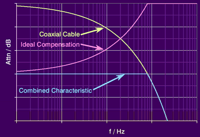
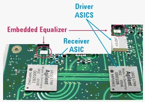
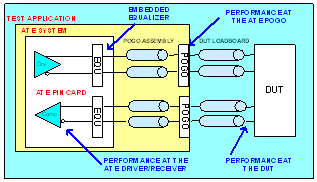
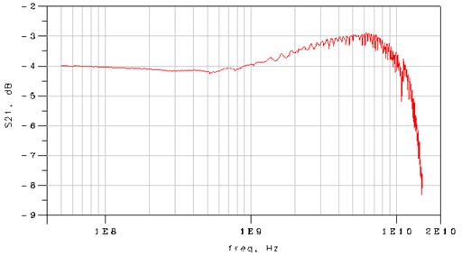
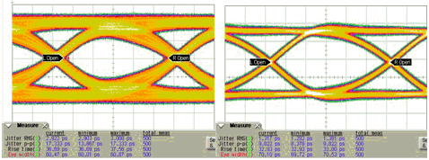

Equalization
DUT board traces can have significant loss at high-frequencies, even when using state of the art materials and methodologies on the DUT board design. To compensate for some of this loss, the Pin Scale HX card has an integrated passive equalizer.
The figure below shows the effect of a passive equalizer. Basically it is a kind of high-pass filter that attenuates the lower frequencies. The objective is to remove the frequency dependent loss that is typical of DUT board traces.

This compensation is integrated in the pin electronics of the Pin Scale HX card. As it is fully calibrated there are no drawbacks associated from a user's point of view.
This type of loss compensation is used on most high-speed bench instrumentation. The figures below show the equalizers integrated on the Pin Scale HX card pin electronics.


The embedded equalizer compensates not only for the DUT board but also for the pogo cable assembly. It was designed to optimally compensate for 10 inches (25 cm) of a 19 mil wide stripline on a Rogers4350 dielectric.
Independent of trace geometry, trace length, and dielectric material, equalization will always help compensating for trace loss, as long as the trace loss is higher than the loss the equalizer was designed to optimally compensate. This means, if you use a very short trace, (for example, 2 inch long, 19 mil wide on Rogers 4350,) the equalizer will over-compensate. Over-compensation shows as an overshoot on the data eye.
On the other side, if you use a very lossy signal trace, (for example, 20 inch long, 19 mil wide on Rogers 4350,) the equalizer will compensate at least for some of its loss. The performance will be better than without equalization, but still worse than the performance of a 10 inch trace.
The figure below shows the insertion loss of the equalizer for compensating the DUT board signal trace loss (the pogo assembly and the pogo via are already compensated). This allows you to check how much compensation you will get for the signal trace. There are models available for use on circuit simulators (for example, ADS). If you need further assistance please contact your Advantest representative.

The table below lists the equalization values for compensating the signal trace loss after the DUT board pogo via. (Note: The values are approximations from a single measurement.)
Frequency (GHz) |
Equalization (DB) |
|---|---|
1 |
0.3 |
2 |
0.8 |
3 |
1.1 |
4 |
1.3 |
5 |
1.4 |
6 |
1.5 |
7 |
1.1 |
Example of integrated equalization improvement
This example shows how the equalization integrated on Pin Scale HX card improves the signal integrity of a high-speed digital DUT board. The example trace is a 14 inch (35.56 cm) long, 21 mil wide microstrip on a Rogers 4350 dielectric.
The figure below shows the insertion loss with and without the Pin Scale HX card equalizer on the time domain. The driver runs at 12.8 Gb/s with a PRBS31 data pattern. On the left is the data eye measured at the receiver without passive equalization filter, and on the right the data eye with equalizer.

Integrated equalization clearly addresses some of the challenges associated with designing DUT boards for high-speed applications.
Further information
For further information please see the following (and other) papers, which can be found on the Web:
- Wolfram Humann, "Compensation of Transmission Line Loss for Gbit/s Test on ATEs"; International Test Conference 2002
- J. Moreira, M. Tsai, J. Kenton, H. Barnes, D. Faller, "PCB Loadboard Design Challenges for Multi-Gigabit Devices in Automated Test Applications"; DesignCon 2006
- J. Moreira, G. Hänsel, F. Koban, "Addressing the Challenges of Implementing an At-Speed Production Test-Cell for 10Gb/s Wafer Probing"; DesignCon 2005
Functional changes
- Introduced before SmarTest 6.3.2